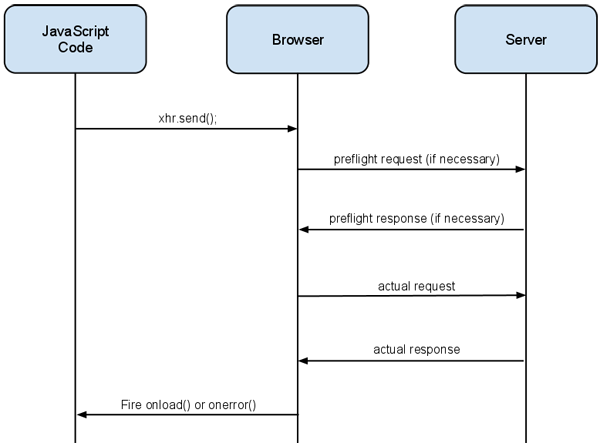

1. Cross-Origin Resource Sharing (CORS)
Зазвичай HTTP-запит можна робити тільки в рамках поточного сайту. При спробі використовувати інший домен/порт/протокол - браузер видає помилку. Це зроблено з міркувань безпеки і налаштовується на стороні сервера.
Якщо бекенд не підтримує CORS-запити, то фронтенд-розробник нічого не зможе з цим зробити в своєму коді.
Загальна ідея полягає в наступних кроках:
- Перед самим запитом, браузер робить preflight-запит, інформуючи сервер про те, що він (бразуер) хоче зробити HTTP-запит з такої-то адреси.
- Сервер повертає preflight-відповідь в якому дозволяє або забороняє робити запит, залежить від налаштувань сервера.
- Якщо сервер дозволив робити запит, браузер робить оригінальний запит і отримує відповідь сервера.
- Якщо сервер заборонив запит, в консолі браузера можна буде бачити інформацію про CORS-помилку під час спроби запиту.

Розберемо POST-запит. Під час запиту, браузер може додавати заголовок Origin,
вказуючи на те, звідки було взято оригінальний HTML-файл.
POST HTTP/1.1
Origin: https://webiste.api.com
Host: webiste.api.com
Тоді сервер у відповідь поверне заголовок Access-Control-Allow-Origin, в
котрому буде вказані адреси з правами доступу до API. Значеннями можуть бути
певні адреси, або * — доступ дозволений з будь-якої адреси.
// Якщо API приватний, то будуть вказані доступні адреси
Access-Control-Allow-Origin: https://webiste.api.com
// Якщо API публічний, доступ буде відкритий усім
Access-Control-Allow-Origin: *